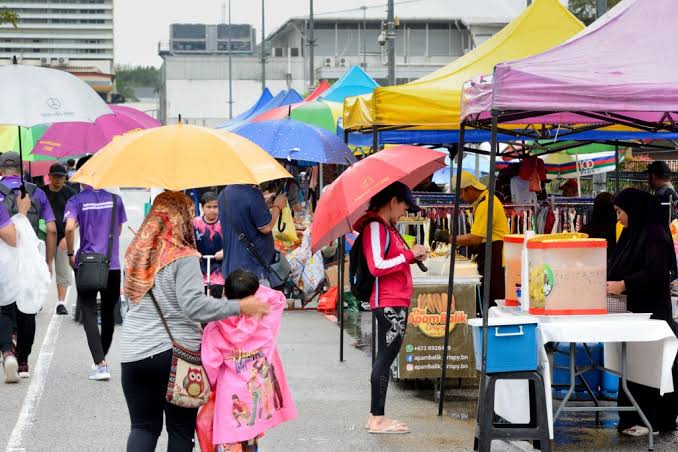
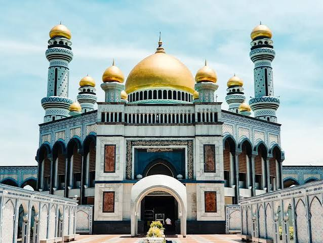
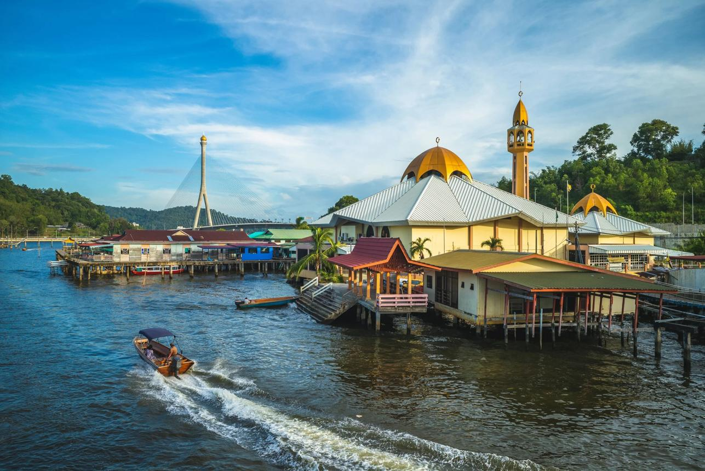

Natural Beauty
Explore lush tropical rainforests, beautiful landscapes and the biodiversity of Ulu Temburong National Park.
A Guide to Culture, Active Living & Local Festivities
WELCOME TO THE ABODE OF PEACE
From breathtaking rainforests and royal heritage to vibrant local traditions, discover a destination where culture, nature and peaceful living come together.
ABOUT THE NATION
Brunei Darussalam, also known as the Abode of Peace, is a small yet remarkable country situated on the northern coast of the island of Borneo in Southeast Asia.
Known for its rich Malay Islamic heritage, Brunei combines traditional values with modern development. Its peaceful atmosphere, beautiful Islamic architecture and welcoming communities make it a unique destination for visitors.
From the historic water village of Kampong Ayer to the untouched tropical rainforests of Ulu Temburong, Brunei offers opportunities to explore both cultural heritage and natural beauty.
Discover Brunei's Cultural Heritage →
EXPERIENCE THE DIFFERENCE
Discover what makes Brunei a special destination for travellers seeking culture, nature and relaxation.
Explore lush tropical rainforests, beautiful landscapes and the biodiversity of Ulu Temburong National Park.
Experience Brunei's Malay Islamic Monarchy identity, traditional architecture, local customs and historical landmarks.
Discover traditional Bruneian dishes, local food markets and the warmth of Brunei's welcoming communities.
TRADITIONS AND IDENTITY
Brunei's identity is deeply rooted in its Malay Islamic Monarchy philosophy, known as Melayu Islam Beraja (MIB). Its traditions, values and customs continue to shape everyday life.

Islam plays an important role in Brunei's national identity. Its beautiful mosques, religious celebrations and traditions reflect the country's Islamic heritage.

Brunei's Malay heritage can be experienced through traditional clothing, language, customs, handicrafts and the historic water village of Kampong Ayer.

Discover Brunei's history, royal heritage and cultural identity through its historical landmarks and heritage sites.
Interested in learning more about Brunei's cultural heritage and traditions?
Explore Cultural HeritageTRAVEL WITH RESPECT
Understanding local customs helps visitors appreciate Brunei's culture and enjoy a respectful travel experience.
Visitors are encouraged to dress modestly, especially when visiting mosques and religious or government buildings. Follow the venue's clothing requirements.
Be considerate of religious practices and local customs. During Ramadhan, be mindful of public dining etiquette and follow local guidance.
Remove footwear where required, maintain respectful behaviour and follow visitor instructions when entering mosques.
YOUR JOURNEY STARTS HERE
Continue discovering Brunei through our travel guides, featured destinations and local experiences.
Learn about Brunei's weather, festive seasons and cultural celebrations to help plan your visit.
Discover the Best Time →Explore iconic landmarks, traditional villages, family attractions and Brunei's natural landscapes.
Explore Attractions →Find practical travel information, useful recommendations and ideas for your Brunei itinerary.
Start Planning →